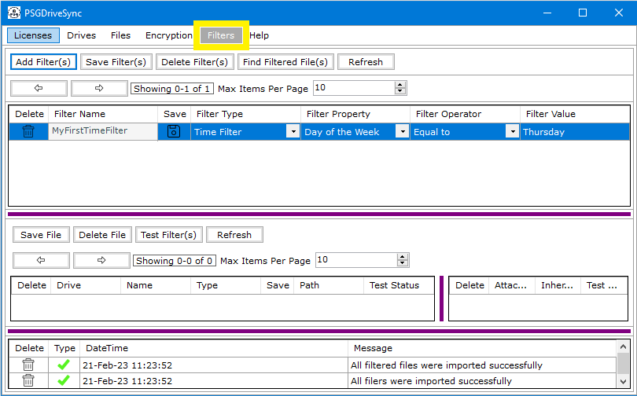

|  |
"Filters" is an application functionality that allows for conditional syncing to take place. This functionality works only in sync operations
and not real time file operations. After a filter has been created then it needs to be attached to a file or folder to take effect. These files or
folders which have filtered attached to them are termed as "Filtered Files".
Filter operations can be used with any filter type and carry the same meaning that their analog in math operations do. For example, a time filter setup with "Current Date" property and "Less than" operator will check if the current date on your computer is less than the date specified as the value of the filter and sync the file or folder that its linked to if the result of the comparison is true otherwise false. Following is a list of operators which can be assigned to "Filters"
Besides this filters can also be set as "Inheritable" however this can only be done during setting up of Filtered Files in the "Filters" window.Besides that the Filtered File which is being setup must be a Folder.Filter marked as "Inheritable" do not apply to the folder which is its linked filtered file instead those kind of filters apply to all the child files and folders contained in the folder itself. For example: A filter has been set as "Folder" type with its property set to "Name", Operator set to "Equal to" and Value set to "Test" and has been linked to a folder named "Folder123". This Filter has also been set as "Inheritable". When this filter runs on the folder "Folder123" then it will not fail even though its value is "Test" which is different from the folder name "Folder123" instead it will continue to run on all the child folders contained in the folder "Folder123". Any child folder which has its name same as filter value "Test" will pass the filter test and sync while others which do not will not sync. If multiple filters are linked to a filtered file or folder then for that file or folder to pass the filter test and sync successfully, all the filters attached to it should pass. even if one filter fails then the file or folder will not sync. |